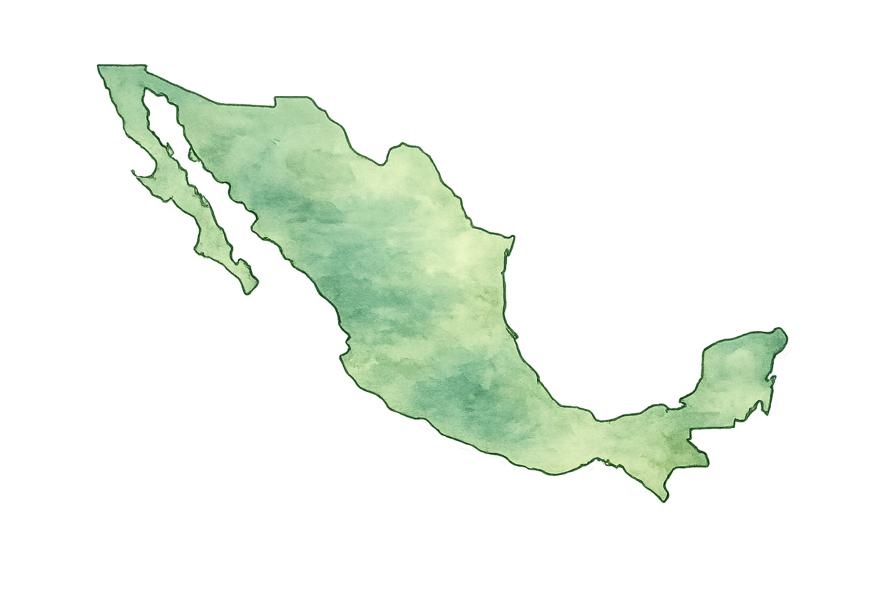

Siembra lo que no pudiste decir.
Un espacio anónimo para expresar lo que llevas dentro. Cada confesión se convierte en una semilla que crece y florece junto a otras y, como propuesta de campaña, puede vincularse con acciones reales de reforestación.
Tu identidad siempre está protegida. Nunca se pide nombre para confesar.
Un lugar libre de juicios. Solo tú decides qué compartir.
Juntos hacemos crecer este jardín y sus metas ambientales.
Explora las confesiones que otras personas han sembrado.
Simulación en tiempo real: cada punto representa una semilla sembrada en una ubicación aproximada de México.

Las ubicaciones son aproximadas para conservar el anonimato.
Distribución de emociones en todas las confesiones sembradas.